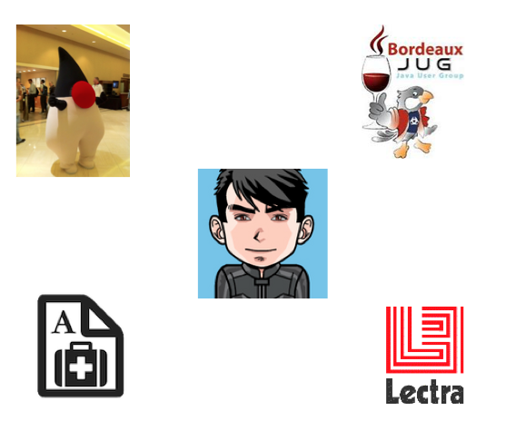

Toolbox for a living doc
Me
@binout https://github.com/binout

Il y un an …
Living Documentation : vous allez aimer la documentation !Cyril Martraire, BDX/IO 2015
Et aussi le livre
Documentation 2.0
- La documentation est avec le code
- La documentation se build avec le code
- La documentation se teste comme le code
Mais…
- La documentation doit rester vivante !
- La maintenance reste l’enjeu majeur.
Ma boîte à outils
Documentation Technique
README-
- description d’un projet, du contexte
- outils de build
TUTORIAL-
- getting started
- examples de codes
API REST-
- documentation des ressources
Asciidoctor !
TODO
Include macro
Avec l’inclusion de source, de fichier json, de fichier java
Documentation Métier
BDD (Behaviour Driven Design)
- Utilisation du langage naturel et du domaine métier pour décrire les spécifications
- Les spécifications permettenent de créer des tests automatisés
Cucumber

cucumber-java en 4 temps
-
Ajouter les dépendances
info.cukes:cucumber-javaetinfo.cukes:cucumber-junit -
Un fichier
.featureenGherkin - Une classe Java faisant le bridge entre le fichier et les assertions de test
- Une classe Java pour ajouter le runner Cucumber
Fichier feature
Feature: Features of dropbox command line
====
[quote]
____
In order to manage my Dropbox account,
As a Dropbox user
I want to use a CLI.
____
====
[IMPORTANT]
=====
You need to retrieve a API key for https://dropbox.github.io/dropbox-api-v2-explorer[Dropbox API v2]
=====
Scenario: Command whoami
Given a dropbox api key
When i type "whoami"
Then it should return my name
Scenario: Command ls
Given a dropbox api key
When i type "ls"
Then it should return a list of pathFichier Steps
@Given("^a dropbox api key$")
public void a_dropbox_api_key() throws Throwable {
assertThat(Dropbox.apiKey()).isNotNull();
}
@When("i type \"([^\"]*)\"")
public void i_type_a_command(String command) throws Throwable {
this.result = executeCommand(command);
}
@Then("^it should return my name$")
public void it_should_return_my_name() throws Throwable {
assertThat(result).contains("Benoît Prioux");
}
@Then("^it should return a list of path$")
public void it_should_return_a_list_of_path() throws Throwable {
Arrays.stream(result.split(System.lineSeparator())).forEach(p -> assertThat(p).startsWith("/"));
}
}Fichier Runner
package io.github.binout.dropbox.bdd;
import cucumber.api.CucumberOptions;
import cucumber.api.junit.Cucumber;
import org.junit.runner.RunWith;
@RunWith(Cucumber.class)
@CucumberOptions(strict=true, plugin = {"json:target/cucumber.json"} )
public class DropboxCliTest {
}Cukedoctor - Living Documentation
- Permet de générer de (jolis) rapports en HTML ou en PDF
Autre exemple de doc métier
- Glossaire
-
- vocabulaire métier de l’application
- est utilisé par les experts métier
On doit retrouver le même vocabulaire dans le code !
Génération à partir du code
Génération de la doc à partir du code Soit avec qdox
Documentation Architecture
- diagramme de classe, de séquence
- diagramme d’architecture
dot syntax
Dot diagramme plantuml viewer
Génération depuis le code
- Retro architecture
GitHub : livingdoc organisation
- dot-diagram
- maven plugin
Conseil
La meilleure doc c’est celle qu’on écrit pas ! Avant d’écrire une doc - pour quel public ? - pour quel objectif ? - pour combien de temps ?
/